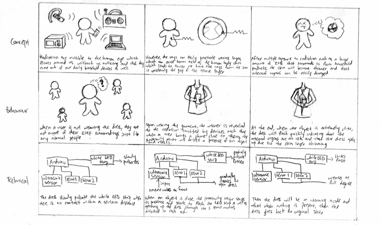
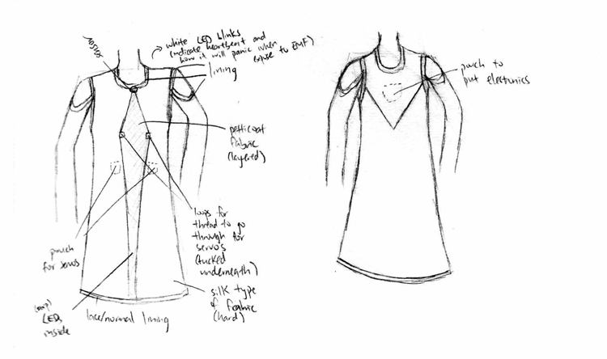
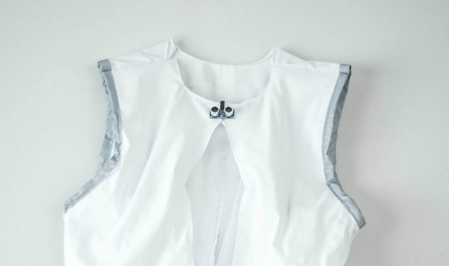
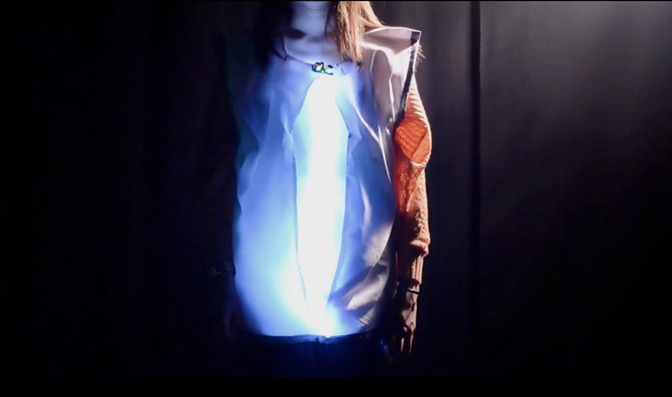

Type
School project
Role
Project manager
Experience designer
Interaction designer
Electrician
Fabricator
Cinematographer
Film Editor
Tools


Team
Brendan DeBrincat
Janet Lau

Objective
To create a research piece through the use of an interactive skin that generates a dialogue between users as well as evoking an emotional appeal while using the product.
Process
This is an interactive wearable that raises reflection from the user's perspective in terms of interacting with technologies that emit radiation in the environment. Here, various iterations were drawn in order to execute the most meaningful experience for users such that a dress was created which were easier to hide the electronics, but it can be altered to other forms upon revisions. In terms of development, Arduino was used as the source of processing the electronics, which were then embedded in a sewn dress. For this research piece, I was involved as the concept designer to wiring and sewing, designing a cohesive experience through interactions, as well as multimedia.
- 
- 
Result
At last, with multiple struggles along the design phases, I have learned how the new area of interactive wearable is capable of producing people's lives. For instance, when the dress opens up and glows vividly, it simulates that internal organs are getting damanged by radiation and this causes users to reflect upon their actions.
- 
- 